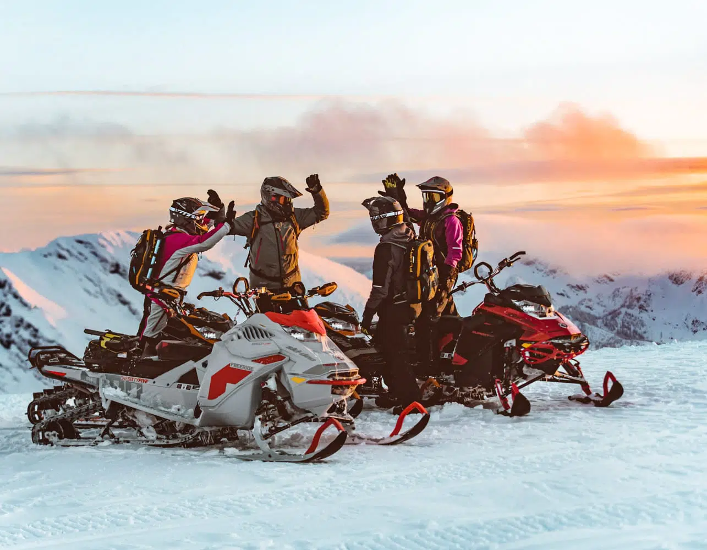
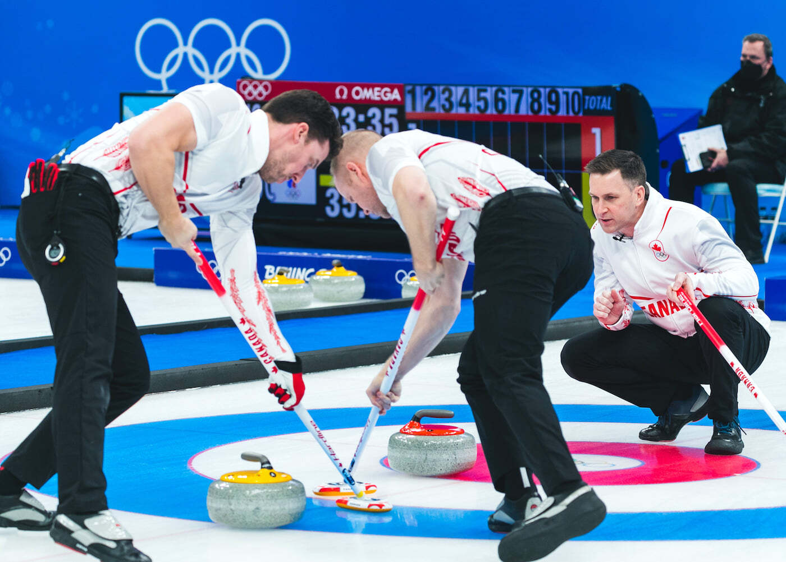
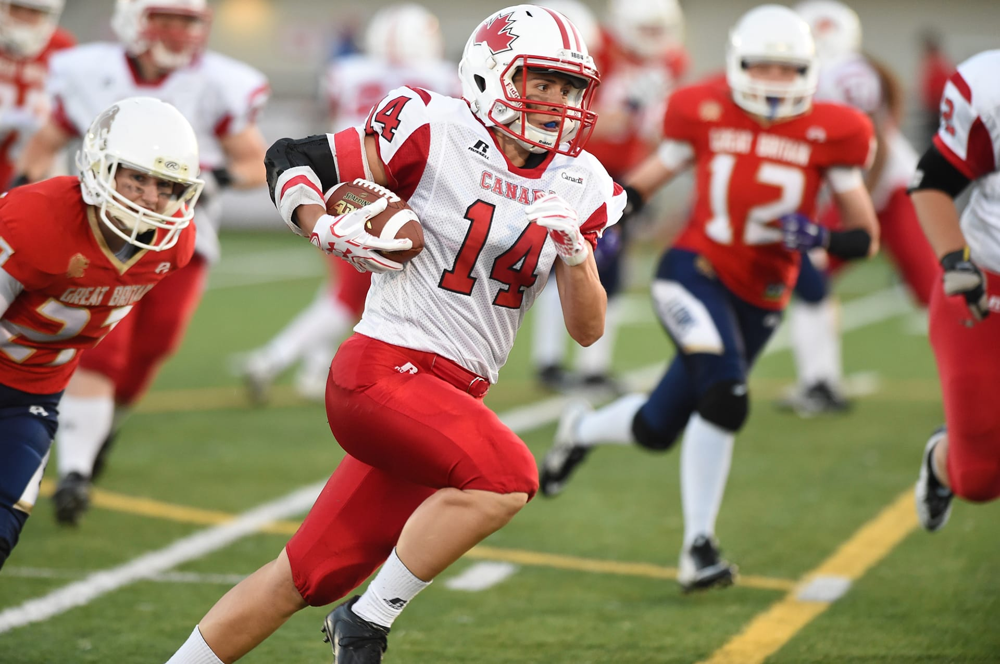

Les sports nationaux officiels du Canada sont le hockey et la crosse.
Le hockey est le sport le plus populaire au pays.
Les sept plus grandes régions métropolitaines du Canada — Toronto, Montréal, Vancouver, Ottawa, Calgary, Edmonton et Winnipeg — sont les villes-maison d'équipes faisant partie intégrante de la Ligue nationale de hockey (LNH).
Au sein de toutes les équipes de la Ligue (trente-deux équipes réparties entre le Canada et les États-Unis), plus de 50 % de tous les joueurs sont originaires du Canada.



Outre le hockey, la saison froide est au Canada propice aux sports d'hiver tels le patin à glace, le ski alpin et le ski nordique, la raquette, la randonnée en motoneige.
Certains centres de ski ont acquis une renommée internationale Whistler, Mont-Tremblant, Mont Sainte-Anne.
La pratique de la motoneige s'est initialement développée au Canada, à la suite de l'invention de la motoneige par Joseph-Armand Bombardier.
D'autres sports canadiens populaires comprennent le curling, le football canadien (en particulier la Ligue canadienne de football)